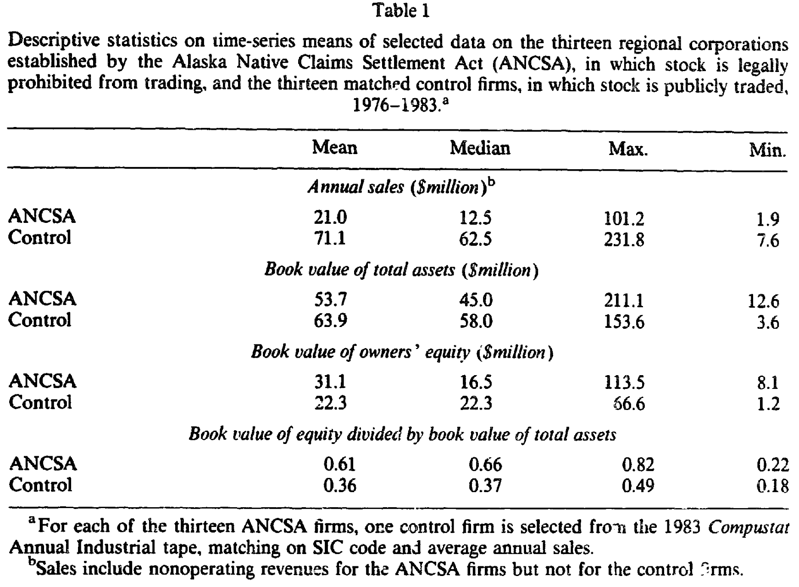
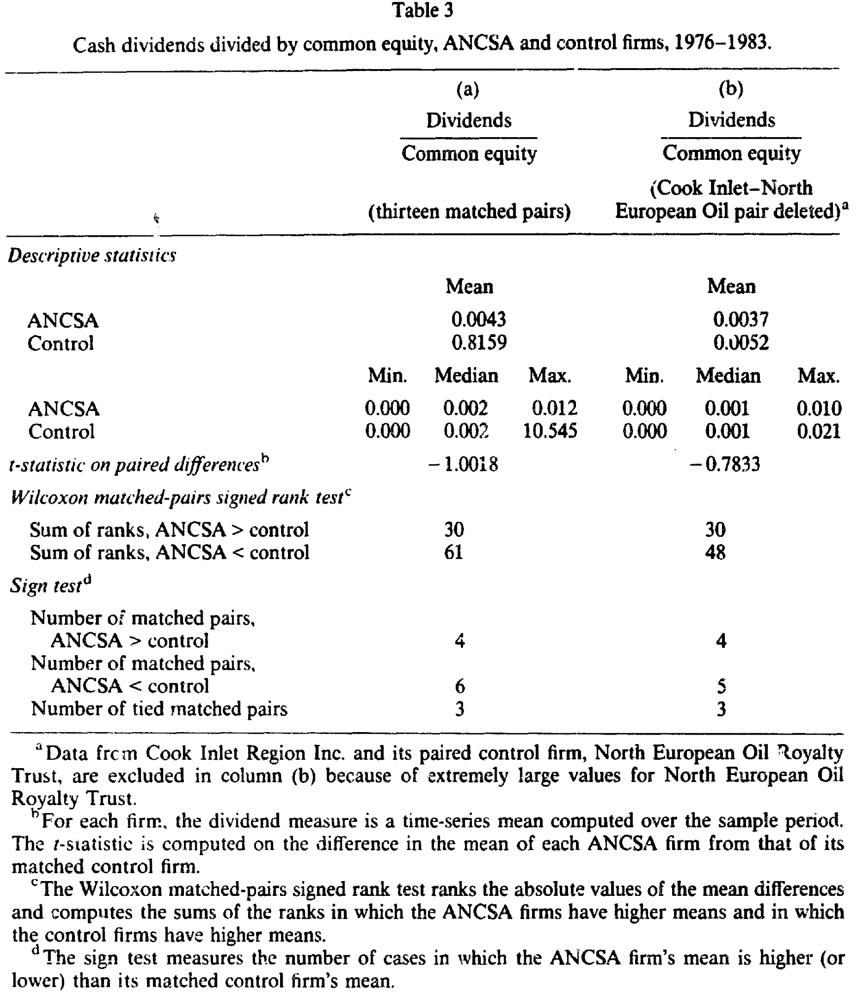
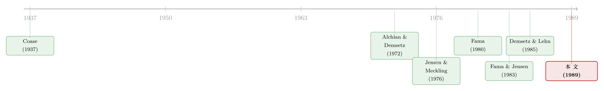

一家你永远卖不掉股票的公司，会变成什么样？
本文读的是 Karpoff and Rice (1989, Journal of Financial Economics)：1971 年的《阿拉斯加原住民土地权利清算法》(ANCSA) 阴差阳错地造出了 13 家股权高度分散、却被法律禁止转让股票的盈利性公司。把它们和按行业、规模配对的 13 家上市公司放在一起比，作者发现这些「卖不掉股票」的公司财务业绩明显更差、内斗与控制权之争频发、董事与经理的更替率畸高——一句话，股票能不能自由转让，是分散持股的现代公司能否高效运转的命门。
1 一个几乎不可能做的实验
做公司治理研究的人，心里大概都藏着一个「不切实际」的念头。
我们都相信，能自由买卖的股票，是现代公司一项了不起的制度发明。股票能转让，意味着不满意的股东可以「用脚投票」一走了之，意味着野蛮人可以在门口虎视眈眈地发起收购，意味着市场价格每时每刻都在替你给经理人的能力打分，也意味着公司可以把高管的薪酬和股价绑在一起。Easterbrook 和 Fischel 有一句被反复引用的话：股东自由交易股票、并以此对当下的管理层投票的能力，「无疑是制约代理成本最强有力的约束」。
可问题是——你怎么证明它？
现实中所有的公司都能交易股票。你没办法找两家一模一样的公司，把其中一家的股票「冻」住，再看十年后两者有何不同。组织形式是公司在市场竞争中演化出来的内生选择，能存活下来的，多半已经是相对高效的那一种。于是「股票可转让很重要」这句话，长期以来更像一条人人点头、却谁也没真正称量过的信条。
这正是 Karpoff 和 Rice 这篇 1989 年的论文如此迷人的地方：历史替他们做了这个实验。
2 阿拉斯加送来的「实验室」
故事要从 1971 年说起。
那一年，美国国会用一部《阿拉斯加原住民土地权利清算法》(Alaska Native Claims Settlement Act, ANCSA)，了结了一桩悬而未决的土地争端。法案把 9.625 亿美元现金和 4000 万英亩土地分配给阿拉斯加原住民（印第安人、爱斯基摩人和阿留申人），作为交换，原住民放弃对阿拉斯加其余土地的一切主张。
但钱和地并没有直接发到个人手里。法案把阿拉斯加划成十二个地理区域，每个区域成立一家地区公司 (regional corporation)，每位登记入册的原住民获得这家公司的 100 股股票。后来又为居住在州外的原住民单设了第十三家公司。这十三家公司，就是本文的主角。
它们和普通公司其实很像：自由经营、开年度股东大会、股东选董事、董事选经理。但 ANCSA 给它们套上了几道极不寻常的枷锁，其中最要命的一条是——
股东的股票，在 1991 年 12 月 18 日之前不得以任何方式转让：不能出售、不能质押、不能设定留置或被强制执行、不能转让给他人。
接着，一个自然的问题是：这条限制是怎么来的？
这恰恰是全文识别策略的核心。作者花了不少笔墨论证：股票不可转让这条规定，几乎肯定是出于无知，而非利益集团的算计。当年立法辩论的焦点是「公司制」对「部落制」之争，限制转让只是为了防止原住民把公司控制权卖给非原住民，是一条没什么争议、顺手通过的条款。一个被反复提起的动机竟是「怕原住民糊里糊涂地、以『太低』的价格把股票卖掉」——这套说辞完全无视了有效市场在资本化预期、降低交易成本、聚合信息方面的作用。
换句话说，这条限制不是市场演化的产物，而是一群不懂它有多重要的人，从外部硬塞进来的。这一点至关重要：它让这十三家公司成了一组近乎外生的处理样本 (treatment)，可以用来检验「公司理论 (theory of the firm)」一系列原本难以验证的预测。作者甚至特意补了一句——就算限制是出于别的原因强加的，后面的分析也几乎不受影响。
3 理论说，这些公司会「病」在哪儿
在去翻数据之前，作者先把「公司理论」对这些公司的预言一条条摆了出来。沿着 Alchian-Demsetz、Jensen-Meckling、Fama-Jensen 这一脉，最清晰的两条预测是：管理层监督与经营业绩会更差；股东之间代价高昂的内斗会更频繁。
先看业绩为什么会更差。 约束经理人偷懒和无能的机制，通常有五种：(1) 控制权转移的威胁（敌意收购、代理权之争、破产中换人）；(2) 经理人劳动力市场根据公司表现不断重估其身价，进而改变其预期未来工资；(3) 写进薪酬合同的、基于业绩的激励（含持股）；(4) 股东直接监督暴露机会主义后施加的法律与市场惩罚；(5) 与业绩挂钩的非货币性回报（比如地位）。
关键在于，这五种机制里，有三种都要靠「股票能转让」才转得动：
- 第一种，控制权转移：股票不能交易，要约收购无从发起、某些并购无法执行，这道市场纪律直接被掐断。
- 第二种，劳动力市场的评价：一来证券分析师没有动力去盯一家自己买不到股票的公司，二来 Fama (1980) 早就指出，市场价格是劳动力市场评估经理人的重要信息源——而 ANCSA 公司压根没有股价。
- 第三种，激励合同：Brickley、Bhagat 和 Lease (1985)、Masson (1971) 都发现基于股价的薪酬能提升公司价值，可 ANCSA 公司连市值都没有，这种合同设计无从谈起。
更妙的是作者对「内生性」的一段反驳。有人会说：ANCSA 公司的股东和董事不够「老练」、所有权过于分散，这些才是业绩差的原因，跟能不能转让股票无关。作者的回应是——这些特征本身就不会在能交易的市场里长期存活下去。在普通公司里，不老练的股东会把股票卖给更老练、更会监督的人；要求董事必须持股也不成问题，因为任何想请来的专家买一股就够资格了；至于分散度，Demsetz 和 Lehn (1985) 论证过所有权集中度是内生的，没有交易限制时会演化到成本最低的水平。正是不可转让这条枷锁，直接或间接地锁死了「不老练的监督者 + 极度分散的所有权」这套低效结构。
再看内斗为什么会更多。 在普通的分散持股公司里，股东一旦对公司政策不满，有一个「退出选项 (bailout option)」——把股票卖给那些更认同这套政策的人。这种转让会自发形成跨股东群体的「政策客户群 (policy clienteles)」，让大家在「最大化市值」这件事上达成共识。可一旦股票不能卖，退出选项就没了：股东们甚至不再一定偏好价值最大化的政策（当现金流不能交易时，不同偏好、不同禀赋的人会给同一笔现金流定出不同的价），分歧也无法再通过转让来化解。于是结论是：ANCSA 的股东会频繁卷入代价高昂的政策之争。
理论还有几条不那么斩钉截铁的预测：因为个人层面分散风险变难了，股东可能会鼓励公司过度多元化、投资于容易监督的项目（比如被动的证券投资、本州投资）、给经理人发更低的货币工资。
4 怎么比：13 对配对样本
预测有了，怎么检验？作者的做法是给每家 ANCSA 公司找一个「双胞胎」。
控制组取自 1983 年的 Compustat 工业年度磁带，按 SIC 行业代码和平均年销售额做配对，时间窗口是 1976–1983 年。统计单位是「公司」：先算出每家公司每个公司-年的指标（如资产回报率），再在时间维度上对每家公司求均值，得到一个公司层面的观测值。然后用三种检验比较两组：配对 t 检验、Wilcoxon 配对符号秩检验、符号检验——后两者不需要正态分布假设，稳健性更好。
这里有一个作者很诚实的细节。从 1983 年的 Compustat 取控制样本会引入幸存者偏差 (survivorship bias)，但他论证这个偏差恰恰是「帮倒忙」的：ANCSA 公司规模偏小，配到的往往是 Compustat 上最小的公司，而能挤上 Compustat 的小公司在样本期里销售大多停滞或下滑。也就是说，控制组本身就偏向于「表现不佳」的公司，这会让两组之间的差距被低估——结果若仍然显著，说服力反而更强。
表 1 给出了两组的「体检报告」：典型的 ANCSA 公司年销售额（均值 21.0 百万美元）明显小于控制组（71.1 百万），但账面总资产（53.7 vs 63.9 百万）和账面权益（31.1 vs 22.3 百万）大体相当。一个耐人寻味的差异是杠杆：ANCSA 公司的账面权益／总资产高达 0.61，控制组只有 0.36——这些公司几乎不怎么借债。

Table I
作者也坦言，有些配对配得并不好，但两个最核心的结论——财务业绩差和股东内斗严重——在 ANCSA 公司的原始数据里就肉眼可见，控制组的主要作用，是给这些效应的大小和显著性提供一把标尺。
5 数据给出的判决
接着，把数据摊开。
业绩这一关，ANCSA 公司没能及格。 衡量业绩的第一个会计指标是「总盈利 (E) 加已付利息 (IP)，再除以账面总资产 (TA)」，即 (E+IP)/TA，辅以「盈利除以权益」E/EQ。这里冒出来一个戏剧性的大异常值：控制组里的 North European Oil Royalty Trust，八年里平均资产回报率高达 304.3%、平均净资产回报率 1055%；与它配对的 Cook Inlet Region 恰好又是表现最好的 ANCSA 公司（ROA 8.5%、ROE 10.5%）。这两家公司的资产负债表都没把构成其大部分价值的资源储量计入，账面回报变得「基本上是任意的」。为了不让数据被这一对污染，作者把这对剔除，留下 12 对配对公司。
更细致的一步是，作者还把 ANCSA 公司投在金融证券上的那部分收益和资产单独剥离出来。理由来自 Fama-Jensen：证券市场投资因为有外部估值信号，代理问题通常比实物资产投资轻；ANCSA 公司若大量投资证券，会以接近债券利率的速度「凭空」赚到会计盈利，从而掩盖其经营本身的低效。把这部分净掉之后，公司在「经营」上的差距才看得更清楚。

Table 3
沿着同一条主线往下，控制权之争与人事更替则把「内斗」这条预测坐实了。理论说退出选项被拿掉、政策客户群无法形成，股东会更频繁地围绕公司政策开战——数据里果然出现了高发的控制权争夺，以及董事和经理层异乎寻常的高更替率。这恰恰是「无声的退出」被堵死后，矛盾只能以「有声的对抗」爆发出来的写照。
至于那几条较弱的预测，数据给的是「方向一致、力度偏弱」的支持：ANCSA 公司倾向于使用不寻常的监督与激励机制、背负更高的一般及管理费用、大量多元化、重仓金融资产、并给经理人发较低的货币工资。把所有这些拼在一起，整幅图景与公司理论的预言高度吻合。
6 文献脉络：从科斯的一个追问，到阿拉斯加的一次「天然实验」
把视野拉远，这篇论文其实是一条绵延半个世纪的思想线上的一个落点。
源头是 Coase (1937)——公司为什么存在？接着 Alchian 和 Demsetz (1972) 把公司看成一束合约，强调团队生产中的监督与计量成本。真正把「代理」推到舞台中央的，是 Jensen 和 Meckling (1976) 那篇传世之作：管理层行为、代理成本与所有权结构被第一次系统地缝合在一起（关于这一脉的来龙去脉，可参见《债务这副药，为什么不能全吃？——重读 Jensen 和 Meckling 五十年》）。
然后，Fama (1980) 补上了关键一环——经理人劳动力市场，并点明市场价格是这套评价机制的信息血液。Fama 和 Jensen (1983a, b) 进一步把「所有权与控制的分离」「代理问题与剩余索取权」讲透。而 Demsetz 和 Lehn (1985) 则给出了本文最直接的理论支点：所有权集中度是内生的，会演化到成本最低的水平。

但真正关键的一步在于：以上所有理论，都默认了一个前提——股票可以自由交易。退出、收购、定价、激励、监督的内生调整，全都建立在这块基石上。当 ANCSA 把这块基石抽掉，整套机制会塌成什么样？ 这正是前人无法在自然界里找到的反事实 (counterfactual)，而阿拉斯加替我们造出了它。从这个意义上说，Karpoff 和 Rice 不是在提出新理论，而是为这一整条理论线，找到了一块罕见的、近乎外生的试金石。
值得一提的是，「一张卖不掉的股票到底值多少」这个问题，后来在更广的语境里被反复追问（可参见《纸面上的百万富翁：一只「卖不掉」的股票，到底值多少钱？》）；而「控制权的私利」「投票权的价格」这些母题，也都能在这条线上找到它们的根。
7 评论与延伸（Q&A + 研究方向）
(a) 几个可能的疑问
Q：这真的是一个干净的「自然实验」吗？会不会是 ANCSA 公司天生就差？
这是全文最要害的质疑，作者也最用力地回应。他的两道防线是：其一，转让限制源于无知、是外生强加的，与公司质量无关；其二，控制样本因取自 1983 年 Compustat 而偏向「差公司」，这会低估而非夸大效应，结果若仍显著则更可信。但必须承认，ANCSA 公司还同时背着非创业起源、高启动与诉讼成本、原住民股东等一篮子特殊性，要把效应唯一归因于「不可转让」，并不容易。
Q：那能不能把「不可转让」和「股东不老练、所有权过度分散」分开？
作者的精彩之处恰在于：他论证后两者并非独立的混淆项，而是「不可转让」的下游后果——能交易的市场会自动把不老练的股东换成老练的、把过度分散的结构收敛到最优。所以在他的框架里，这些本就是同一条因果链上的环节，而非需要剔除的干扰。这套逻辑漂亮，但也意味着识别建立在「理论自洽」之上，而非把每个渠道分别钉死。
Q：用会计指标衡量业绩，靠谱吗？
不得已而为之。因为没有股价，作者只能退回到会计数字，并明确援引 Fisher、McGowan 和 Greenwood (1983) 承认其众所周知的缺陷。他用了多个指标、剥离证券投资收益、剔除异常值、配对设计来加固结论，但「没有市值」这件事本身，既是这些公司的病因，也是研究者的镣铐。
Q：杠杆那么低（权益／资产 0.61），是不是也说明了点什么？
很可能。几乎不借债，意味着这些公司放弃了债务作为约束经理人自由现金流的工具——这与 Jensen 后来「自由现金流代理成本」的逻辑遥相呼应（参见《现金为什么一定要「还」出去？》）。一家既无收购威胁、又无债务约束、还无股价信号的公司，几乎卸下了所有外部纪律。
Q：1991 年限制到期（后又延期），这是不是说股东其实「想要」这个限制？
不能简单这么推。限制延期需要股东多数投票否决才解除（1988 年的修法），这与「股东主动选择了高效结构」是两回事——退出选项一旦缺席，投票本身也会被前述的偏好分歧和客户群无法形成所扭曲。这恰恰是本文逻辑的延伸：在不可转让的世界里，连「股东想要什么」都变得模糊。
Q：样本只有 13 家公司，统计上站得住吗？
这是硬约束。13 对配对、三种检验（含两种非参数检验）是作者能做的最稳妥安排，符号检验和 Wilcoxon 检验降低了对分布假设的依赖。但小样本意味着任何单一异常值都举足轻重——North European / Cook Inlet 那一对的剔除就是明证。结论的方向很清楚，精确的量级则要谨慎对待。
(b) 几个可能的研究问题与提案
1. 1991 年限制到期前后的「自然断点」。 【经济故事】既然转让限制有一个明确的法定到期日（及后续延期投票），那么在「即将可交易 vs 仍不可交易」的预期切换点上，公司的投资、治理、人事行为应当出现可观测的调整。这是把横截面比较升级为时间序列/断点识别的好机会。 【可行性】中。需要 ANCSA 公司 1990 年代至今的财务与治理数据，可得性是主要障碍（这些公司多数非公开披露）；识别上可借助延期投票的州内差异。doable 但取决于档案数据的可获得性。
2. 把「不可转让」的逻辑搬到公司债与信用市场。 【经济故事】债券的二级市场流动性，与股票转让权在精神上同源——当债券「卖不掉」，债权人的退出与定价约束同样失效。能否找到某类因监管或契约而流动性受限的债券，复制本文的「退出选项缺失 → 监督失灵」检验？ 【可行性】高。公司债流动性数据（如 TRACE）成熟，已有大量度量流动性的工具（参见《把「成交价」从「成交量」里解放出来——重新丈量公司债的流动性》）。识别需要一个外生的流动性冲击，这是关键难点。
3. 外资持有人作为「类 ANCSA」的受限股东。 【经济故事】许多新兴市场对外资设有持股转让或可投资度限制，造成一类「退出受阻」的股东。这与 ANCSA 的设定有结构性相似：当一部分股东无法自由退出，公司治理与业绩会怎样？ 【可行性】中到高。可投资度 (investability) 数据与跨国治理数据可得，已有文献从「外资是否蝗虫」的角度切入（参见《外资真是「蝗虫」吗？——一次跨 30 国的长期投资体检》）。把焦点收窄到「转让受限」这一具体机制上，是有空间的增量。
4. 不可转让股权与高管薪酬结构。 【经济故事】本文预测 ANCSA 公司给经理人发更低的货币工资、且无法使用股价挂钩合同。在更广的私人公司 / 合伙制样本里，「股权不可交易」是否系统性地改变了薪酬的形状（现金 vs 递延 vs 利润分成）？ 【可行性】中。私人公司薪酬数据稀缺是主要障碍，但 PE 投资组合公司或合伙制专业服务机构或可提供切口。
8 我的判断
先说贡献。这篇论文最了不起的，不是它的统计，而是它的选题嗅觉——在一部为土地争端立的法案里，嗅出了一个公司治理研究者梦寐以求的反事实。它把「股票可转让很重要」这条人人默认却无从检验的信条，第一次放到了近乎外生的检验台上，并用一组方向高度一致的证据，把「退出选项—监督机制—经营效率」这条因果链讲圆了。三十多年后回看，它依然是「组织形式即生产率」这一命题最干净的实证注脚之一。
再说我的担忧。识别的软肋在于，ANCSA 公司同时背负着太多特殊性，作者把「股东不老练、所有权分散」处理成「不可转让的内生后果」固然逻辑自洽，却也意味着这套识别更多依赖理论的内部一致性，而非把每条渠道分别钉死；非创业起源、诉讼成本、原住民股东这些因素，很难说被完全吸收掉了。加上 13 对样本、纯会计指标、对单一异常值的敏感，结论的方向比它的量级可信得多。
后续我最想看到的，是有人接住第 1 个研究方向：沿着 1991 年到期日及其延期投票，把这组公司从「横截面快照」做成「时间序列电影」。如果在「即将解禁」的预期下，这些公司的投资与治理行为出现可观测的转向，那将是对本文核心机制一次远比配对比较更有力的确认。阿拉斯加给了我们一个起点，但这个实验，其实还没演完。
参考文献
- Alchian, A.A. and H. Demsetz (1972). Production, information costs, and economic organization. American Economic Review 62, 777–795.
- Brickley, J.A., S. Bhagat, and R.C. Lease (1985). The impact of long-range managerial compensation plans on shareholder wealth. Journal of Accounting and Economics 7, 115–129.
- Coase, R.H. (1937). The nature of the firm. Economica 4, 386–405.
- Demsetz, H. and K. Lehn (1985). The structure of corporate ownership: Causes and consequences. Journal of Political Economy 93, 1155–1177.
- Easterbrook, F.H. and D.R. Fischel (1981). The proper role of a target's management in responding to a tender offer. Harvard Law Review 94, 1161–1204.
- Fama, E.F. (1980). Agency problems and the theory of the firm. Journal of Political Economy 88, 288–307.
- Fama, E.F. and M.C. Jensen (1983a). Separation of ownership and control. Journal of Law and Economics 26, 301–325.
- Fama, E.F. and M.C. Jensen (1983b). Agency problems and residual claims. Journal of Law and Economics 26, 327–349.
- Jensen, M.C. and W.H. Meckling (1976). Theory of the firm: Managerial behavior, agency costs and ownership structure. Journal of Financial Economics 3, 305–360.
- Karpoff, J.M. and E.M. Rice (1989). Organizational form, share transferability, and firm performance: Evidence from the ANCSA corporations. Journal of Financial Economics 24(1), 69–105.
- Masson, R.T. (1971). Executive motivations, earnings, and consequent equity performance. Journal of Political Economy 79, 1278–1292.